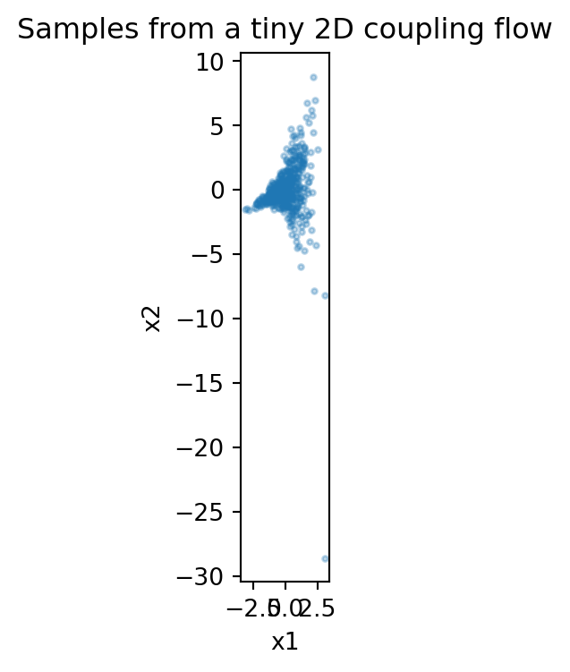
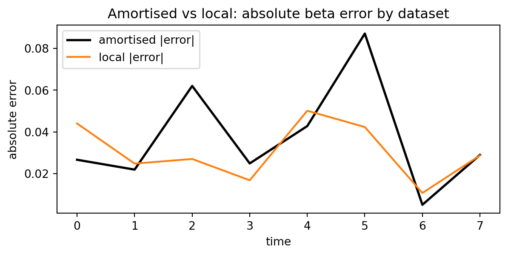
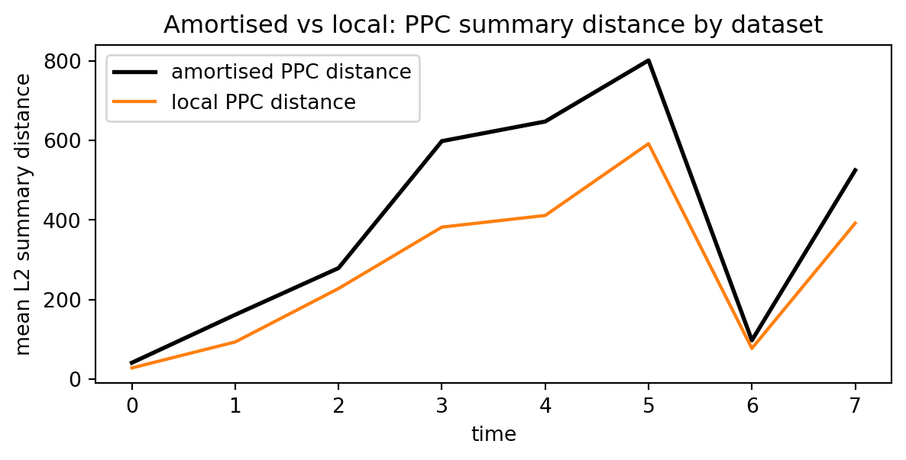

import numpy as np
rng = np.random.default_rng(0)10 Modern simulation-based inference
This chapter starts the modern SBI track: amortised neural posterior / likelihood / ratio estimation and conditional density models.
The goal is to provide a minimal, runnable baseline pipeline and show how to evaluate it (calibration, posterior predictive checks, and diagnostics).
This chapter follows the modern SBI framing in (Cranmer, Brehmer, and Louppe 2020; Papamakarios, Sterratt, and Murray 2019) and keeps the implementation deliberately transparent.
10.1 Chapter map
- Flow mechanics with an explicit change-of-variables example.
- End-to-end beta-only NPE loop (simulation bank, conditional density fit, posterior sampling).
- Lightweight JAX conditional density training loop.
- Posterior predictive and amortised-vs-local diagnostics.
10.1.0.1 A tiny flow “from scratch” (1D + 2D)
A normalising flow builds a flexible density by transforming a simple base random variable \(z \sim p_Z(z)\) (often standard normal) through an invertible map:
\[x = f_\phi(z), \qquad z = f_\phi^{-1}(x).\]
The change-of-variables formula gives
\[\log p_X(x) = \log p_Z\bigl(f_\phi^{-1}(x)\bigr) + \log\left|\det \nabla_x f_\phi^{-1}(x)\right|.\]
Below we implement two tiny examples in pure NumPy:
- 1D affine flow (shift + scale), which is “just” a learned Gaussian.
- 2D coupling flow (RealNVP-style), which introduces non-trivial dependencies.
Note
These are deliberately minimal and not meant to be a performant flow library. The point is to make the invertibility and log-determinant Jacobian bookkeeping concrete.
10.1.0.1.1 1D affine flow
def stdnorm_logpdf(z: np.ndarray) -> np.ndarray:
return -0.5 * (z**2 + np.log(2 * np.pi))
def affine_forward(z: np.ndarray, mu: float, log_sigma: float) -> np.ndarray:
"""x = mu + exp(log_sigma) * z"""
return mu + np.exp(log_sigma) * z
def affine_inverse(x: np.ndarray, mu: float, log_sigma: float) -> np.ndarray:
"""z = (x - mu) / exp(log_sigma)"""
return (x - mu) * np.exp(-log_sigma)
def affine_log_prob(x: np.ndarray, mu: float, log_sigma: float) -> np.ndarray:
"""log p_X(x) induced by z~N(0,1), x = mu + sigma z."""
z = affine_inverse(x, mu=mu, log_sigma=log_sigma)
# For 1D: log|det d/dx f^{-1}(x)| = log(1/sigma) = -log_sigma
return stdnorm_logpdf(z) - log_sigma
# Toy data: non-standard normal
x_data = rng.normal(loc=2.0, scale=0.7, size=2_000)
# MLE for Gaussian = match sample mean/std.
mu_hat = float(x_data.mean())
log_sigma_hat = float(np.log(x_data.std(ddof=0)))
nll = lambda mu, ls: float(-affine_log_prob(x_data, mu=mu, log_sigma=ls).mean())
print({
"mu_hat": mu_hat,
"sigma_hat": float(np.exp(log_sigma_hat)),
"NLL(base std normal)": nll(mu=0.0, ls=0.0),
"NLL(fitted affine flow)": nll(mu=mu_hat, ls=log_sigma_hat),
}){'mu_hat': 1.9803820899009006, 'sigma_hat': 0.7001382390069695, 'NLL(base std normal)': 3.124991921064692, 'NLL(fitted affine flow)': 1.0624610540641546}10.1.0.1.2 2D coupling flow (one coupling layer)
A classic coupling layer keeps part of the vector unchanged and uses it to scale/shift the rest. For \(x=(x_1,x_2)\), one simple form is
\[y_1 = x_1, \qquad y_2 = x_2\,\exp(s(x_1)) + t(x_1).\]
This is always invertible as long as \(\exp(s(x_1))>0\), and its Jacobian determinant is cheap:
\[\log |\det \nabla_x f(x)| = s(x_1).\]
def coupling_forward(x: np.ndarray, a: float, b: float) -> tuple[np.ndarray, np.ndarray]:
"""One 2D coupling layer.
y1 = x1
y2 = x2 * exp(a*x1) + b*x1
Returns: (y, log_det_J) where log_det_J is per-sample.
"""
x1 = x[:, 0]
x2 = x[:, 1]
s = a * x1
t = b * x1
y1 = x1
y2 = x2 * np.exp(s) + t
y = np.stack([y1, y2], axis=1)
log_det = s # per-sample
return y, log_det
def coupling_inverse(y: np.ndarray, a: float, b: float) -> tuple[np.ndarray, np.ndarray]:
"""Inverse of coupling_forward.
x1 = y1
x2 = (y2 - b*x1) * exp(-a*x1)
Returns: (x, log_det_J_inv) where log_det_J_inv is per-sample.
"""
y1 = y[:, 0]
y2 = y[:, 1]
s = a * y1
t = b * y1
x1 = y1
x2 = (y2 - t) * np.exp(-s)
x = np.stack([x1, x2], axis=1)
log_det_inv = -s
return x, log_det_inv
def stdnorm2_logpdf(z: np.ndarray) -> np.ndarray:
return -0.5 * (np.sum(z**2, axis=1) + 2 * np.log(2 * np.pi))
def coupling_flow_log_prob(y: np.ndarray, a: float, b: float) -> np.ndarray:
# y = f(x), with base density on x ~ N(0, I)
x, log_det_inv = coupling_inverse(y, a=a, b=b)
return stdnorm2_logpdf(x) + log_det_inv
# Draw samples by pushing base samples through the coupling layer
z = rng.normal(size=(5_000, 2))
flow_samples, log_det = coupling_forward(z, a=0.8, b=0.5)
print({
"samples_mean": flow_samples.mean(axis=0).round(3).tolist(),
"samples_cov": np.cov(flow_samples.T).round(3).tolist(),
"avg_log_det": float(log_det.mean()),
}){'samples_mean': [0.014, -0.019], 'samples_cov': [[0.995, 0.403], [0.403, 3.771]], 'avg_log_det': 0.01122702511566227}import matplotlib.pyplot as plt
fig, ax = plt.subplots(figsize=(4, 4))
ax.scatter(flow_samples[::10, 0], flow_samples[::10, 1], s=5, alpha=0.3)
ax.set_title("Samples from a tiny 2D coupling flow")
ax.set_xlabel("x1")
ax.set_ylabel("x2")
ax.set_aspect("equal")
plt.show()
In practice, learned coupling flows use neural nets to represent \(s(\cdot)\) and \(t(\cdot)\) (and stack many layers, alternating which coordinates are transformed), but the bookkeeping is the same.
10.1.1 3) NPE pipeline (end-to-end)
- Generate training pairs \((\theta_i, y_i)\) from the simulator + prior.
- Choose an encoder for time series \(y\) (summaries first; later a small neural encoder).
- Train a conditional density model for \(\theta\mid y\).
- Evaluate on held-out simulations.
10.1.1.1 Demo: beta-only “NPE” with the package conditional-flow helper (no deep learning)
Before we use a full conditional flow, it helps to see the basic NPE loop in the simplest possible form. We will:
- Sample \(\theta_i = \log \beta_i\) from a prior.
- Simulate a stochastic SEIR observation \(y_i\).
- Compress \(y_i\) to a low-dimensional summary vector \(s_i\).
- Fit a conditional density model \[q_\phi(\log \beta \mid s) = \mathcal{N}(\mu_\phi(s),\,\sigma_\phi(s)^2).\]
Here \(\mu_\phi(s)\) is just a linear regression and \(\sigma_\phi\) is a single global scale. This is not a powerful model, but it is a runnable baseline with exactly the same control flow as neural NPE.
In code, we will use the package’s ConditionalAffineDiagNormal helper to fit this model in closed form.
import numpy as np
from diff_epi_inference import SEIRParams
from diff_epi_inference.pipeline import simulate_seir_and_report_stochastic
rng = np.random.default_rng(0)
# --- Synthetic "observed" dataset ---
beta_true = 0.35
params_true = SEIRParams(beta=beta_true, sigma=1 / 4.0, gamma=1 / 6.0)
steps = 80
ds_obs = simulate_seir_and_report_stochastic(
params=params_true,
s0=10_000,
e0=3,
i0=2,
r0=0,
dt=1.0,
steps=steps,
reporting_rate=0.25,
rng=rng,
)
y_obs = ds_obs.y.astype(float)
def summary(y: np.ndarray) -> np.ndarray:
"""A tiny hand-crafted encoder for a reported-incidence time series."""
y = np.asarray(y, dtype=float)
peak_t = int(np.argmax(y))
return np.array([np.sum(y), np.max(y), peak_t], dtype=float)
s_obs = summary(y_obs)
print({"beta_true": beta_true, "s_obs": s_obs.round(3).tolist()}){'beta_true': 0.35, 's_obs': [1138.0, 59.0, 77.0]}# --- Prior over log(beta) ---
logbeta_prior_mean = float(np.log(0.3))
logbeta_prior_sd = 0.35
def prior_sample_logbeta(rng: np.random.Generator) -> float:
return float(rng.normal(loc=logbeta_prior_mean, scale=logbeta_prior_sd))
def simulate_y_from_logbeta(logbeta: float, *, rng: np.random.Generator) -> np.ndarray:
beta = float(np.exp(logbeta))
params = SEIRParams(beta=beta, sigma=params_true.sigma, gamma=params_true.gamma)
ds = simulate_seir_and_report_stochastic(
params=params,
s0=10_000,
e0=3,
i0=2,
r0=0,
dt=1.0,
steps=steps,
reporting_rate=0.25,
rng=rng,
)
return ds.y.astype(float)
def make_training_data(n_sims: int, *, rng: np.random.Generator) -> tuple[np.ndarray, np.ndarray]:
"""Return (S, logbeta) with S shape (n_sims, d)."""
S = np.zeros((n_sims, 3), dtype=float)
logb = np.zeros((n_sims,), dtype=float)
for i in range(n_sims):
lb = prior_sample_logbeta(rng)
y = simulate_y_from_logbeta(lb, rng=rng)
S[i] = summary(y)
logb[i] = lb
return S, logb
S_train, logb_train = make_training_data(800, rng=np.random.default_rng(1))
S_test, logb_test = make_training_data(200, rng=np.random.default_rng(2))
print({"S_train_shape": S_train.shape, "logb_train_mean": float(logb_train.mean())}){'S_train_shape': (800, 3), 'logb_train_mean': -1.2095443448622796}from diff_epi_inference.flows import ConditionalAffineDiagNormal
# Fit q(logbeta | s) as a *conditional affine flow* (a diagonal Gaussian)
# in closed form.
flow = ConditionalAffineDiagNormal.fit_closed_form(
contexts=S_train,
thetas=logb_train[:, None],
)
# Predict mean log(beta) on a test set (for a sanity check).
mu_test = flow.mean(S_test)[:, 0]
rmse = float(np.sqrt(np.mean((mu_test - logb_test) ** 2)))
print({"sigma_hat": float(np.exp(flow.log_sigma[0])), "test_RMSE_logbeta": rmse}){'sigma_hat': 0.13429620838685563, 'test_RMSE_logbeta': 0.13001736854755003}# Sample from the learned posterior q(logbeta | s_obs).
logb_post = flow.sample(s_obs, 5_000, rng=np.random.default_rng(3))[:, 0]
beta_post = np.exp(logb_post)
print(
{
"beta_true": beta_true,
"beta_post_mean": float(np.mean(beta_post)),
"beta_post_q10": float(np.quantile(beta_post, 0.1)),
"beta_post_q90": float(np.quantile(beta_post, 0.9)),
}
){'beta_true': 0.35, 'beta_post_mean': 0.3545202252634459, 'beta_post_q10': 0.2961454270383665, 'beta_post_q90': 0.418358659968864}This model is intentionally crude: the posterior width here is driven mostly by the regression residuals. The same NPE workflow can be extended to more expressive conditional flows when non-Gaussian posteriors are needed.
10.1.1.2 Tiny JAX training loop (behind modern-sbi)
The point of this section is not to introduce new modelling ideas. It is just a minimal, end-to-end example of the mechanics we will reuse for neural NPE:
- define a parametric model
- write a loss (negative log-likelihood)
- take gradients
- apply an optimiser update
import jax
import jax.numpy as jnp
import equinox as eqx
import optax# Reuse the (S_train, logb_train) data defined above.
X = jnp.asarray(S_train)
y = jnp.asarray(logb_train)
# Standardise inputs (same idea as above).
x_mean = X.mean(axis=0)
x_std = jnp.where(X.std(axis=0) > 0, X.std(axis=0), 1.0)
Xn = (X - x_mean) / x_std
class CondGaussian(eqx.Module):
net: eqx.nn.MLP
def __call__(self, x: jnp.ndarray) -> tuple[jnp.ndarray, jnp.ndarray]:
# Predict (mu, log_sigma) for log(beta) given summaries.
out = self.net(x)
mu = out[0]
log_sigma = out[1]
return mu, log_sigma
key = jax.random.PRNGKey(0)
model = CondGaussian(
net=eqx.nn.MLP(
in_size=3,
out_size=2,
width_size=16,
depth=2,
activation=jax.nn.tanh,
key=key,
)
)
def nll_one(params: CondGaussian, x: jnp.ndarray, y: jnp.ndarray) -> jnp.ndarray:
mu, log_sigma = params(x)
# Add a small floor for numerical stability.
log_sigma = jnp.maximum(log_sigma, -6.0)
sigma2 = jnp.exp(2.0 * log_sigma)
return 0.5 * ((y - mu) ** 2 / sigma2 + 2.0 * log_sigma + jnp.log(2.0 * jnp.pi))
def loss(params: CondGaussian, xb: jnp.ndarray, yb: jnp.ndarray) -> jnp.ndarray:
return jnp.mean(jax.vmap(nll_one, in_axes=(None, 0, 0))(params, xb, yb))
opt = optax.adam(1e-2)
opt_state = opt.init(eqx.filter(model, eqx.is_array))
@eqx.filter_jit
def step(params: CondGaussian, opt_state, xb: jnp.ndarray, yb: jnp.ndarray):
l, grads = eqx.filter_value_and_grad(loss)(params, xb, yb)
updates, opt_state = opt.update(grads, opt_state, params)
params = eqx.apply_updates(params, updates)
return params, opt_state, l
# Tiny SGD loop.
batch_size = 128
n_steps = 200
key, subkey = jax.random.split(key)
idx = jax.random.permutation(subkey, Xn.shape[0])
for t in range(n_steps):
i0 = (t * batch_size) % Xn.shape[0]
batch_idx = idx[i0 : i0 + batch_size]
xb = Xn[batch_idx]
yb = y[batch_idx]
model, opt_state, l = step(model, opt_state, xb, yb)
# Quick sanity check: does the trained model reduce NLL vs random initialisation?
final_nll = float(loss(model, Xn, y))
print({"final_train_NLL": final_nll}){'final_train_NLL': -0.9696986079216003}10.1.1.3 End-to-end: JAX conditional Gaussian NPE (posterior + posterior predictive)
This section turns the tiny training loop above into a complete, deterministic workflow:
- train a conditional Gaussian for \(\log\beta \mid s(y)\)
- sample an approximate posterior given \(y_{\text{obs}}\)
- run a small posterior predictive check (PPC)
The goal is not state-of-the-art performance; it is a runnable template you can adapt.
import distrax
# Re-train deterministically (fresh init + fixed steps).
key = jax.random.PRNGKey(0)
key, subkey = jax.random.split(key)
model2 = CondGaussian(
net=eqx.nn.MLP(
in_size=3,
out_size=2,
width_size=16,
depth=2,
activation=jax.nn.tanh,
key=subkey,
)
)
opt2 = optax.adam(1e-2)
opt_state2 = opt2.init(eqx.filter(model2, eqx.is_array))
batch_size = 128
n_steps = 300
key, subkey = jax.random.split(key)
idx = jax.random.permutation(subkey, Xn.shape[0])
for t in range(n_steps):
i0 = (t * batch_size) % Xn.shape[0]
batch_idx = idx[i0 : i0 + batch_size]
xb = Xn[batch_idx]
yb = y[batch_idx]
model2, opt_state2, l = step(model2, opt_state2, xb, yb)
# --- Approx posterior for log(beta) given observed summaries ---
s_obs_j = jnp.asarray(s_obs)
s_obs_n = (s_obs_j - x_mean) / x_std
mu_hat, log_sigma_hat = model2(s_obs_n)
log_sigma_hat = jnp.maximum(log_sigma_hat, -6.0)
q = distrax.Normal(loc=mu_hat, scale=jnp.exp(log_sigma_hat))
key, subkey = jax.random.split(key)
logb_samps = np.asarray(q.sample(seed=subkey, sample_shape=(2_000,)))
beta_samps = np.exp(logb_samps)
print(
{
"beta_true": beta_true,
"beta_post_mean": float(np.mean(beta_samps)),
"beta_post_q05": float(np.quantile(beta_samps, 0.05)),
"beta_post_q95": float(np.quantile(beta_samps, 0.95)),
}
)
# --- Tiny posterior predictive check on the summary space ---
rng_ppc = np.random.default_rng(0)
n_ppc = 80
S_ppc = np.zeros((n_ppc, 3), dtype=float)
for i in range(n_ppc):
beta_i = float(beta_samps[i])
params_i = SEIRParams(beta=beta_i, sigma=params_true.sigma, gamma=params_true.gamma)
ds_i = simulate_seir_and_report_stochastic(
params=params_i,
s0=10_000,
e0=3,
i0=2,
r0=0,
dt=1.0,
steps=steps,
reporting_rate=0.25,
rng=rng_ppc,
)
S_ppc[i] = summary(ds_i.y)
# Compare observed summary to PPC distribution (just a few quantiles).
q_lo = np.quantile(S_ppc, 0.1, axis=0)
q_hi = np.quantile(S_ppc, 0.9, axis=0)
print(
{
"ppc_q10": q_lo.round(2).tolist(),
"ppc_q90": q_hi.round(2).tolist(),
"s_obs": s_obs.round(2).tolist(),
}
){'beta_true': 0.35, 'beta_post_mean': 0.3329930901527405, 'beta_post_q05': 0.3035953938961029, 'beta_post_q95': 0.3644125163555145}
{'ppc_q10': [247.5, 21.7, 69.0], 'ppc_q90': [1437.1, 78.1, 79.0], 's_obs': [1138.0, 59.0, 77.0]}10.1.2 3b) NLE: neural likelihood estimation
In NLE we learn an explicit surrogate for the likelihood,
\[q_\phi(y\mid\theta) \approx p(y\mid\theta),\]
typically using a conditional density model (often a conditional flow). Once we can evaluate \(\log q_\phi(y_{\text{obs}}\mid\theta)\), we can do standard Bayesian inference with MCMC:
\[\log p(\theta\mid y_{\text{obs}}) = \log p(\theta) + \log q_\phi(y_{\text{obs}}\mid\theta) + \text{const}.\]
Practical notes:
- In many problems, \(y\) is high-dimensional; in that case NLE is often done on summaries \(s(y)\), learning \(q_\phi(s\mid\theta)\).
- Compared to NPE, NLE often makes it easier to reuse a learned likelihood across different priors (since the likelihood itself is prior-independent).
A minimal skeleton (pseudo-code) looks like:
# Train on simulator output:
# (theta_i, y_i) ~ p(theta) p(y|theta)
# Fit conditional density model q_phi(y|theta)
def log_posterior(theta, y_obs):
return log_prior(theta) + flow_like.log_prob(y_obs, context=theta)
# Then run any MCMC method (Metropolis, HMC, slice, ...)
# targeting log_posterior(., y_obs).This handbook focuses first on NPE for clarity; NLE uses the same simulation bank pattern and becomes practical once you have a conditional density model for the observation space (or summary space).
10.1.3 3c) NRE: neural ratio estimation
In NRE we learn the likelihood-to-evidence ratio
\[r(\theta, y) = \frac{p(y\mid\theta)}{p(y)},\]
usually by reducing ratio estimation to binary classification. A common construction is:
- draw joint samples \((\theta, y) \sim p(\theta) p(y\mid\theta)\) and label them 1
- draw marginal/product samples \((\theta, y') \sim p(\theta) p(y)\) (e.g. by shuffling \(y\)) and label them 0
- train a classifier \(d_\phi(\theta, y) \approx \Pr(\text{joint}=1\mid\theta, y)\)
Then the estimated ratio is
\[\hat r_\phi(\theta, y) = \frac{d_\phi(\theta, y)}{1 - d_\phi(\theta, y)}.\]
This gives a posterior via
\[p(\theta\mid y_{\text{obs}}) \propto p(\theta)\,\hat r_\phi(\theta, y_{\text{obs}}).\]
NRE is attractive when you want a flexible posterior but do not want to model a full conditional density. As with NLE, it is common to feed the classifier summaries \(s(y)\) (or learned embeddings) rather than raw \(y\).
A minimal skeleton (pseudo-code) looks like:
# Make training pairs for a joint-vs-product classifier.
# Joint: (theta, y) ~ p(theta) p(y|theta)
# Product: (theta, y') ~ p(theta) p(y) (e.g. shuffle y within a batch)
def log_ratio_hat(theta, y):
# d_phi(theta, y) is the classifier probability of "joint".
d = classifier.predict_proba(theta, y)
return np.log(d) - np.log1p(-d) # logit(d)
# Posterior (up to normalisation): log p(theta) + log r_hat(theta, y_obs)
def log_posterior(theta, y_obs):
return log_prior(theta) + log_ratio_hat(theta, y_obs)
# Then sample theta from log_posterior(., y_obs) using MCMC.10.1.4 4) Diagnostics and calibration
- Posterior predictive checks (PPC).
- Coverage / calibration checks (small SBC-style smoke test).
- Failure modes: misspecification, simulation budget, overconfident posteriors.
10.1.5 5) Amortised vs local inference
There are two common ways to spend a simulation budget when learning a conditional density model (e.g. an NPE-style estimator):
- Amortised: train once on samples from the prior predictive, then reuse the trained model for many observations.
- Local / sequential: for a single observation, concentrate simulations around the region of parameter space that seems plausible for that observation (often via rounds of proposals).
Below is a tiny comparison on the beta-only running example, using the same simple conditional Gaussian model from the earlier section.
The goal is not to claim strong performance, but to make the trade-off concrete:
- amortised training uses a larger up-front simulation budget, but inference per new dataset is cheap
- local training can use fewer simulations overall if you only care about one dataset, and can often be more accurate for that dataset when the prior is broad
import numpy as np
from diff_epi_inference import plot_series_comparison
from diff_epi_inference.flows import ConditionalAffineDiagNormal
# Reuse from above: prior_sample_logbeta, simulate_y_from_logbeta, summary,
# as well as the amortised `flow` trained on (S_train, logb_train).
def fit_local_flow(
s_obs: np.ndarray,
*,
flow_init: ConditionalAffineDiagNormal,
n_local: int = 400,
proposal_sd: float = 0.15,
rng: np.random.Generator,
) -> ConditionalAffineDiagNormal:
"""Fit a *local* conditional model by simulating around an initial guess.
We use the amortised flow's posterior mean as a proposal centre, then draw
log(beta) ~ Normal(center, proposal_sd) and simulate y, returning summaries.
This is a very small stand-in for a sequential NPE scheme.
"""
center = float(flow_init.mean(s_obs[None, :])[0, 0])
S = np.zeros((n_local, 3), dtype=float)
logb = np.zeros((n_local,), dtype=float)
for i in range(n_local):
lb = float(rng.normal(loc=center, scale=proposal_sd))
y = simulate_y_from_logbeta(lb, rng=rng)
S[i] = summary(y)
logb[i] = lb
return ConditionalAffineDiagNormal.fit_closed_form(contexts=S, thetas=logb[:, None])
def lognormal_sd(*, mu: float, sigma: float) -> float:
"""SD of exp(X) when X ~ Normal(mu, sigma^2)."""
v = float(sigma**2)
return float(np.sqrt((np.exp(v) - 1.0) * np.exp(2.0 * mu + v)))
def ppc_summary_distance(
flow_model: ConditionalAffineDiagNormal,
s_obs: np.ndarray,
*,
n: int,
rng: np.random.Generator,
) -> float:
"""PPC score: mean L2 distance between simulated and observed summaries."""
logb_samp = flow_model.sample(s_obs, n=n, rng=rng)[:, 0]
dists = []
for lb in logb_samp:
y = simulate_y_from_logbeta(float(lb), rng=rng)
s = summary(y)
dists.append(float(np.linalg.norm(s - s_obs)))
return float(np.mean(dists))# Create a few synthetic "observations" with different true betas.
K = 8
rng_obs = np.random.default_rng(123)
logb_true = np.array([prior_sample_logbeta(rng_obs) for _ in range(K)], dtype=float)
beta_true_vec = np.exp(logb_true)
s_obs_list: list[np.ndarray] = []
for k in range(K):
yk = simulate_y_from_logbeta(float(logb_true[k]), rng=rng_obs)
s_obs_list.append(summary(yk))
n_local = 400
n_ppc = 120
# Compare amortised vs local across point estimate error, posterior width, and PPC score.
rows = []
for k, s_k in enumerate(s_obs_list):
mu_am = float(flow.mean(s_k[None, :])[0, 0])
beta_hat_am = float(np.exp(mu_am))
sd_beta_am = lognormal_sd(mu=mu_am, sigma=float(np.exp(flow.log_sigma[0])))
ppc_am = ppc_summary_distance(flow, s_k, n=n_ppc, rng=np.random.default_rng(200 + k))
flow_loc = fit_local_flow(
s_k,
flow_init=flow,
n_local=n_local,
proposal_sd=0.15,
rng=np.random.default_rng(10 + k),
)
mu_loc = float(flow_loc.mean(s_k[None, :])[0, 0])
beta_hat_loc = float(np.exp(mu_loc))
sd_beta_loc = lognormal_sd(mu=mu_loc, sigma=float(np.exp(flow_loc.log_sigma[0])))
ppc_loc = ppc_summary_distance(flow_loc, s_k, n=n_ppc, rng=np.random.default_rng(500 + k))
rows.append(
{
"k": k,
"beta_true": float(beta_true_vec[k]),
"beta_hat_am": beta_hat_am,
"abs_err_am": float(abs(beta_hat_am - beta_true_vec[k])),
"sd_beta_am": sd_beta_am,
"ppc_dist_am": ppc_am,
"beta_hat_loc": beta_hat_loc,
"abs_err_loc": float(abs(beta_hat_loc - beta_true_vec[k])),
"sd_beta_loc": sd_beta_loc,
"ppc_dist_loc": ppc_loc,
}
)abs_err_am = np.asarray([r["abs_err_am"] for r in rows], dtype=float)
abs_err_loc = np.asarray([r["abs_err_loc"] for r in rows], dtype=float)
ppc_am = np.asarray([r["ppc_dist_am"] for r in rows], dtype=float)
ppc_loc = np.asarray([r["ppc_dist_loc"] for r in rows], dtype=float)
mean_err_am = float(np.mean(abs_err_am))
mean_err_loc = float(np.mean(abs_err_loc))
mean_ppc_am = float(np.mean(ppc_am))
mean_ppc_loc = float(np.mean(ppc_loc))
print(
{
"amortised_sims_total": int(len(S_train)),
"local_sims_per_obs": int(n_local),
"local_sims_total": int(n_local * K),
"mean_abs_err_amortised": mean_err_am,
"mean_abs_err_local": mean_err_loc,
"mean_ppc_dist_amortised": mean_ppc_am,
"mean_ppc_dist_local": mean_ppc_loc,
}
)
fig, ax = plot_series_comparison(
t=np.arange(K, dtype=float),
observed=abs_err_am,
fitted=abs_err_loc,
observed_label="amortised |error|",
fitted_label="local |error|",
title="Amortised vs local: absolute beta error by dataset",
ylabel="absolute error",
)
fig
fig, ax = plot_series_comparison(
t=np.arange(K, dtype=float),
observed=ppc_am,
fitted=ppc_loc,
observed_label="amortised PPC distance",
fitted_label="local PPC distance",
title="Amortised vs local: PPC summary distance by dataset",
ylabel="mean L2 summary distance",
)
fig{'amortised_sims_total': 800, 'local_sims_per_obs': 400, 'local_sims_total': 3200, 'mean_abs_err_amortised': 0.03743904795563384, 'mean_abs_err_local': 0.030592436050012765, 'mean_ppc_dist_amortised': 394.10878384108923, 'mean_ppc_dist_local': 275.6685276886164}


Interpretation (for this toy setup):
- Compute budget: the amortised model pays an up-front simulation cost (here:
len(S_train)sims), while the local approach spendsn_localsimulations per observation. - Posterior width: we report an approximate posterior width via
sd_beta(·)(treating \(\log\beta\) as Gaussian, so \(\beta\) is log-normal). - PPC score:
ppc_dist(·)is a tiny posterior predictive check score: simulate datasets from posterior draws and report the mean L2 distance between simulated and observed summaries.
In practice, sequential NPE schemes use multiple rounds and better proposal adaptation, and the comparison depends strongly on the dimensionality of \(\theta\) and on how broad the prior is.
10.2 Notes
- This chapter starts with a beta-only running example so the inference mechanics stay transparent.
- The implementation is intentionally dependency-light; richer integrations can be added without changing the core workflow.
Cranmer, Kyle, Johann Brehmer, and Gilles Louppe. 2020. “The Frontier of Simulation-Based Inference.” Proceedings of the National Academy of Sciences 117 (48): 30055–62.
Papamakarios, George, David Sterratt, and Iain Murray. 2019. “Sequential Neural Posterior Estimation with Autoregressive Flows.” Proceedings of Machine Learning Research 89: 837–48.